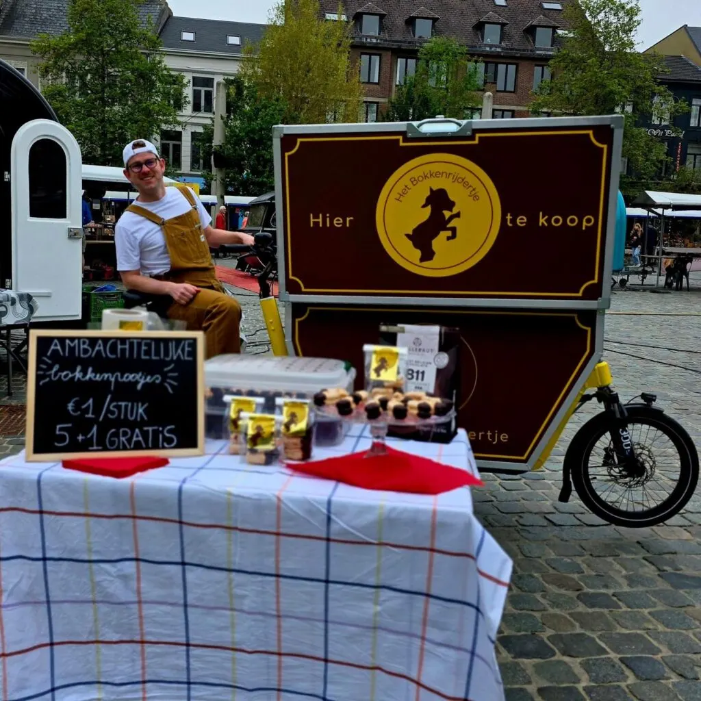
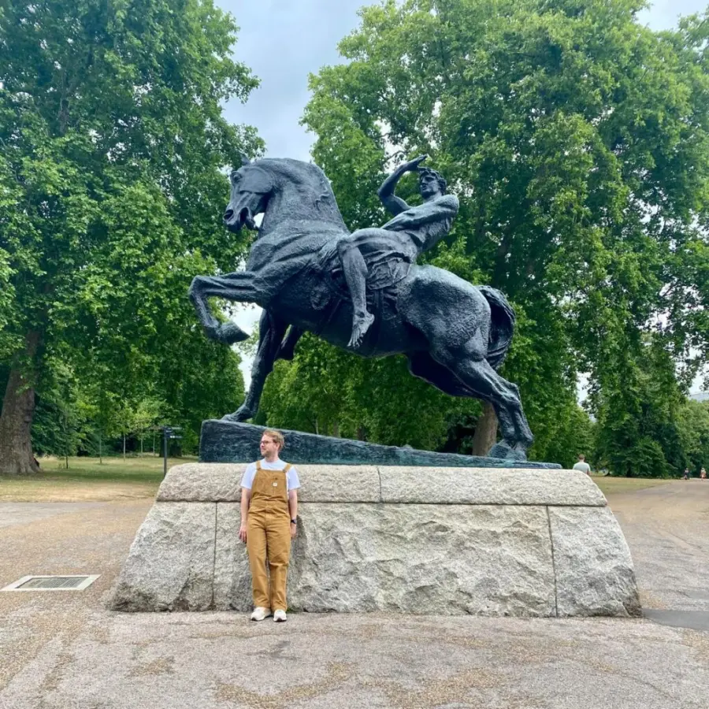

Eerstvolgende stop
Volgende stop
Lekker koppige koekskes
Ben jij ook een lekkerbek die het liefst geniet van je koffie met iets lekkers erbij? Met veel passie en liefde maak ik artisanale bokkenpootjes, die ik verkoop vanuit mijn bokmobiel op lokale marktjes. Welke dierbare bezorg jij een leuk koffiemomentje?

€1per bokkenpootje
Waar je mij vindt
Komende evenementen
Nog niets anders gepland.
Op marktjes
Met mijn kraampje op wintermarkten, braderieën en dorpsfeesten in de buurt.
Evenementen
Van voorleesweek tot jubileum: ik zorg voor het zoete moment.
Bij bedrijven
Voor een receptie, teammoment of als attentie voor klanten.

Wie ben ik?
“Ik ben Ferre Vandael. Al zes jaar maak ik bokkenpootjes alsof ze voor mezelf zouden zijn.”
Mijn doel? Jouw koffiepauze upgraden met een lekker koekske. 5 centimeter pure liefde! En zo probeert dit broekventje van de wereld een betere plaats te maken. (Misschien moet ik eerder geitenwollen sokken gaan verkopen in plaats van bokkenpoten.)
Het Bokkenrijdertje is mijn passieproject, waarin ik me volledig kan uitleven. Ik maak bokkenpootjes wanneer ik goesting heb en spring op mijn bakfiets om ze te verkopen op lokale marktjes die mij leuk lijken.
Klink ik nogal eigenwijs? Klopt, net zoals mijn koekjes ben ik lekker koppig!
- Lokaal
- Persoonlijk
- Ambachtelijk
Blog
Veelgestelde vragen
Wat zijn bokkenpootjes?
2 knapperige koekjes gedipt in heerlijke chocolade met daartussen een smeuïge crème.
Maak je alleen maar bokkenpootjes?
Jip. Ik zou wel graag verschillende smaken bokkenpootjes willen maken. En bokkenpoottaarten. Maar dat is voor later!
Hoe kom je begot bij bokkenpootjes?
Eerlijk? Het was het enigste baksel dat lukte op de bakkerscursus. Het is niet moeilijk, maar vraagt gewoon veel tijd en liefde. Dat mis ik bij nogal veel bokkenpootjes op de markt.
Hoeveel kost dat, zo'n bokkenpootje?
Goh ja, goede vraag. Meestal vraag ik 1 euro per bokkenpoot en verkoop ik zakjes met 5+1 gratis. En eigenlijk scheur ik er dan nog mijn gele tuinbroek aan. In de supermarkt vind je er trouwens 12 voor 1,49 euro. Persoonlijk vind ik die niet te eten, maar dat zijn details, toch?
Kan je bakfiets ook op evenementjes of bij bedrijven staan?
Klinkt tof, why not?
Waarom heb je een bakfiets?
Duurzaamheid! En ik kan niet zo goed autorijden. Fietsen evenmin, zeker met mijn bokmobiel. Wist je trouwens dat alle letters van bokkenpoot ook in de juiste volgorde in het woord brokkenpiloot zitten?
Heb je geen sociale media?
Ik wil van de wereld een betere plaats maken. Maken sociale media van de wereld een betere plaats?
Zin in een koffiemomentje?
De bokmobiel op je event of bij je bedrijf, een taart, of gewoon een vraag? Laat iets weten.